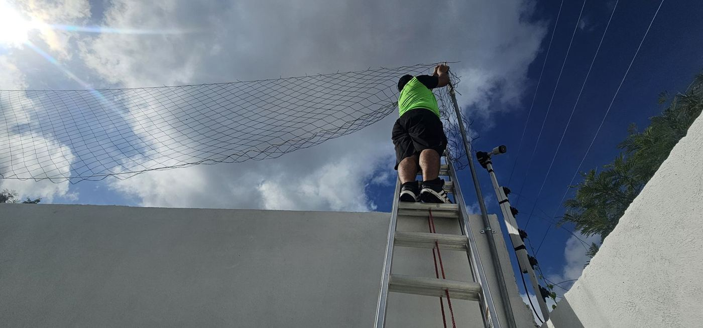
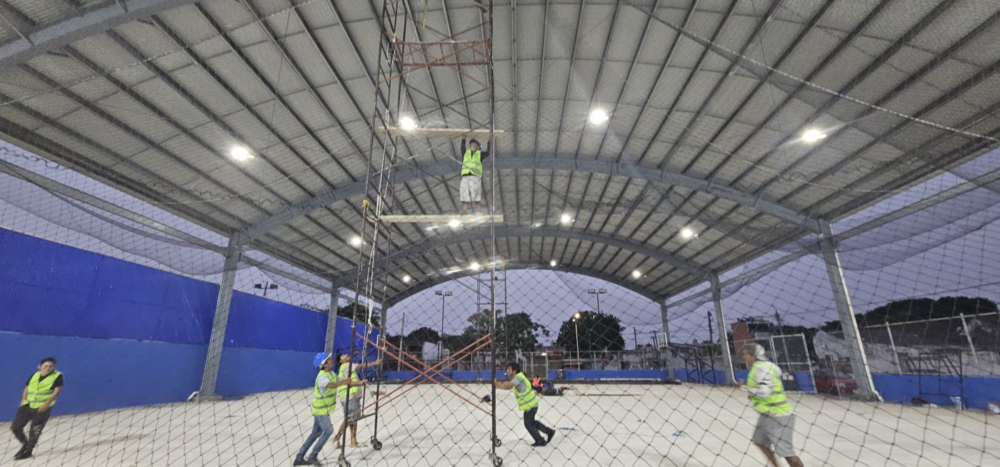
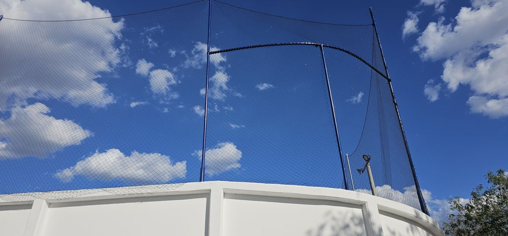
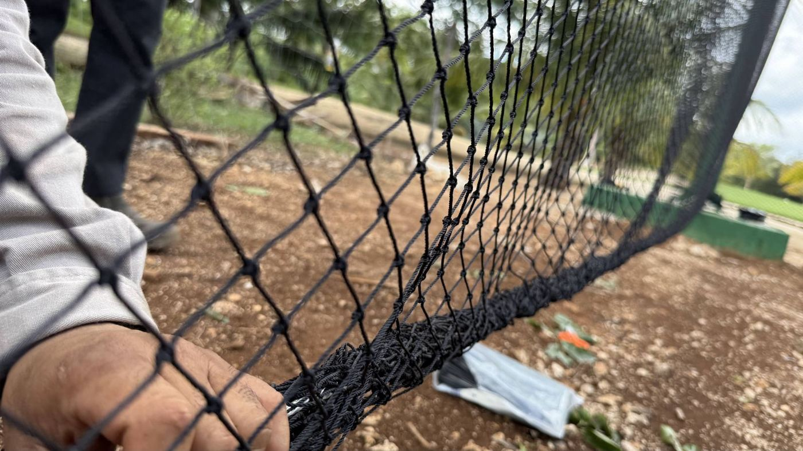
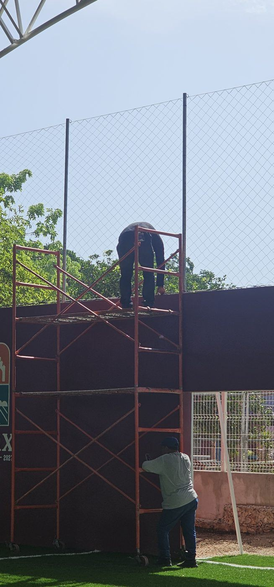

Una buena instalación empieza antes de subir la red. El acceso al lugar, el estado de los postes, el terreno y el horario libre de la cancha pueden cambiar por completo la forma de trabajar.
En estos años instalando y asesorando instaladores he visto que los problemas casi nunca vienen de la red: vienen de lo que no se revisó antes. Aquí junto los 12 errores que más encuentro en obra y cómo anticiparlos, para que no se conviertan en retrasos, daños o riesgos.
La pregunta no es solo “¿cuántos metros de red necesito?”, sino también “¿cómo vamos a llegar, trabajar y fijarla en ese lugar?”.
Logística: llegar al lugar también es parte del trabajo
1. Accesos estrechos o difíciles
En una cancha que atendimos, llegar al sitio complicó el traslado de herramientas, escaleras, andamios y equipo de elevación. Que una persona pueda entrar no significa que el equipo necesario quepa.
Cómo evitarlo: mide puertas, pasillos, giros y altura libre; revisa escaleras, distancia de acarreo, lugar de descarga y restricciones para vehículos. Elige el equipo después de comprobar por dónde va a entrar y dónde va a operar.

2. Terreno desnivelado o sin apoyo firme
Una pendiente, suelo blando, registros, gradas o bordes pueden impedir colocar con seguridad una escalera, un andamio o una plataforma. También hay que revisar si el piso o la cubierta aguanta el equipo.
Cómo evitarlo: evalúa el terreno y usa un sistema compatible con el sitio y con las instrucciones de su fabricante. No compenses desniveles con calzas improvisadas: si no hay una posición segura, cambia el método antes de empezar.
3. No hay espacio para montar o mover el equipo
A veces sí caben las piezas del andamio, pero no hay espacio para armarlo, moverlo o alcanzar todos los puntos de fijación. Árboles, bardas y construcciones cercanas reducen el área de trabajo.
Cómo evitarlo: revisa el recorrido completo de trabajo, no solo la entrada. Define zonas de montaje, maniobra y resguardo, y aclara si habrá que retirar obstáculos o contratar otro equipo.
Seguridad y estructura: altura y soportes se revisan antes
4. Pensar que un balcón elimina el riesgo de caída
Trabajar desde un tercer o cuarto piso implica riesgo de caída al acercarse al borde, alcanzar una fijación o manipular la red. Estar sobre el piso de un balcón no elimina ese riesgo.
Cómo evitarlo: evalúa la posición real de trabajo, los bordes y las protecciones. La NOM-009-STPS-2011 considera trabajo en altura el que se realiza a más de 1.80 m sobre el nivel de referencia; el método y las protecciones se definen en sitio.
5. Postes viejos, oxidados o con fijaciones dañadas
La corrosión, la inclinación, las bases deterioradas o las soldaduras dañadas pueden comprometer el soporte. Una fotografía muestra señales de deterioro, pero no demuestra que el poste aguante.

Cómo evitarlo: revisa postes, bases y uniones antes de tensar. Si hay dudas, pide la evaluación de personal competente y resuelve reparaciones o cambios. Nunca uses un poste como anclaje para tu arnés sin que esté validado para eso.
6. Anclajes insuficientes o mal ubicados
Una red bien fabricada puede quedar mal instalada si los puntos de sujeción no corresponden a sus medidas. Tampoco hay que suponer que cualquier barandal, muro o malla existente soporta la carga.
Cómo evitarlo: acuerda antes dónde y cómo se sujetará la red, y revisa soportes, herrajes y distancia entre fijaciones. El anclaje depende del material del soporte y de las cargas del proyecto: no hay una solución única.
Si el sitio no permite trabajar con seguridad, primero se corrige la condición o se cambia el plan. La asesoría por teléfono no sustituye esa evaluación.
Preparación: la red se prepara en el piso
7. Subir la red enredada o sin identificar sus lados
En el traslado un paño puede torcerse. Querer acomodarlo ya arriba hace difícil reconocer esquinas, bordes y orientación, y obliga a repetir maniobras.

Cómo evitarlo: abre el paquete en un área limpia, extiende el paño, identifica sus lados y quita los enredos antes de subirlo. Organiza los paños por sección; si no hay espacio, prepáralos por tramos, sin jalar la red a ciegas.
8. Puntas de malla ciclónica que atrapan la red
Es uno de los problemas que más se repiten en nuestras instalaciones: la red se atora en las puntas salidas o dobladas de la malla ciclónica que queda abajo. Esos enganches frenan el avance y pueden cortar hilos.
Cómo evitarlo: revisa el borde de la malla antes de presentar el paño y pide que se reparen o protejan las puntas. No arrastres la red sobre alambre expuesto; si se engancha, libera el punto antes de seguir.
9. Medir mal o tensar para compensar el error
Medir solo el largo total, ignorar cambios de altura o cubrir un faltante con más tensión deja la red deformada, con huecos y con esfuerzo de más en las fijaciones. En las redes romboidales, cuánto se abre el rombo cambia la relación entre largo y ancho.
Cómo evitarlo: mide cada sección y su altura útil, anota pendientes, esquinas y puertas, y confirma con nosotros las medidas de trabajo del paño. Distribuye y ajusta poco a poco. La tensión nunca corrige una medida equivocada. Lo explico más a fondo en redes de 1, 2, 3 y 4 pulgadas.
Coordinación y entorno: la agenda y el clima cambian la instalación
10. Una cancha ocupada todo el tiempo
Partidos y entrenamientos sin una ventana libre interrumpen las maniobras y no dejan despejada el área. Unas horas sueltas no siempre alcanzan para terminar una sección y dejarla segura.
Cómo evitarlo: acuerda con el administrador un horario continuo y un área cerrada al público. Considera preparación, montaje, instalación y retiro del equipo. Si se trabaja de noche, planea iluminación, personal y control del área.

11. Viento, lluvia o poca luz
El viento hace difícil controlar el paño; la lluvia cambia el apoyo y la visibilidad, y las sombras esconden enganches o fijaciones flojas.
Cómo evitarlo: revisa el pronóstico y las condiciones reales, respeta los límites de tu equipo y suspende si no es seguro. La misma NOM-009-STPS-2011 contempla interrumpir trabajos en altura por riesgos del clima.
12. Cables, luminarias y otros obstáculos
Líneas eléctricas, reflectores, ramas y anuncios estorban el movimiento de la red, las herramientas o las plataformas, tanto en la posición final como durante la maniobra.
Cómo evitarlo: identifícalos desde la primera revisión. Si hay líneas eléctricas, pide una evaluación especializada y coordínate con quien corresponda antes de acercar equipo.
Lo que conviene acordar por escrito
- Quién prepara los soportes y quién pone el equipo de acceso.
- Horarios autorizados y restricciones del inmueble.
- Reparaciones previas que hacen falta.
- Dónde se resguardan los materiales.
- Cómo se manejan los cambios o las condiciones que no se informaron.
Con esto se planean mejor los tiempos y los costos, y se evitan discusiones a media obra.
Qué mandarnos antes de instalar
Una revisión a distancia sirve más cuando vemos el proyecto completo, no una foto cerrada del poste.
| Qué | Detalle |
|---|---|
| Vista general | Fotos o video de todo el perímetro, de ambos lados, con los obstáculos cercanos. |
| Accesos | Ruta desde la descarga hasta la cancha; ancho y alto de puertas y pasillos; escaleras y restricciones. |
| Medidas | Croquis con largo y altura de cada sección, pendientes, esquinas, puertas y espacios que deben quedar libres. |
| Soportes | Fotos de postes, bases, soldaduras, herrajes y puntos donde se piensa fijar la red. |
| Piso de apoyo | Terreno donde irá el equipo, desniveles, registros y bordes. |
| Malla ciclónica | Puntas dobladas o expuestas donde la red pueda engancharse. |
| Agenda | Horarios libres, partidos, iluminación y permisos de acceso. |
Si todavía estás planeando, revisa también qué preparar antes de instalar una red perimetral y cómo instalar una red perimetral paso a paso.
Antes de dar por terminada la instalación
Revisa cobertura, continuidad, distribución, fijaciones, zonas de roce y aberturas. Retira residuos y herramientas, comprueba que puertas y pasos funcionen, toma fotos finales y acuerda revisiones después de eventos que puedan afectar la red o sus soportes.
Comprar con RC también es contar con asesoría
En Redes Deportivas RC damos asesoría a distancia a nuestros clientes y capacitamos instaladores en toda la República Mexicana. Si durante la preparación o la instalación aparece una dificultad, llámanos: te ayudamos a identificar el paño y su orientación, revisar la distribución, entender las medidas de trabajo de una red romboidal y detectar cuándo el acceso o la estructura necesitan una revisión especializada.
Antes de cortar, forzar la red o improvisar una maniobra, mándanos fotos, medidas y una explicación del problema.
Referencias técnicas
- Secretaría del Trabajo y Previsión Social: NOM-009-STPS-2011, Condiciones de seguridad para realizar trabajos en altura (DOF, 6 de mayo de 2011); definición de trabajo en altura y suspensión por condiciones del clima. Consultada el 12 de octubre de 2026.
Las experiencias de obra y recomendaciones corresponden al criterio de Reinier Coral, de Redes Deportivas RC.